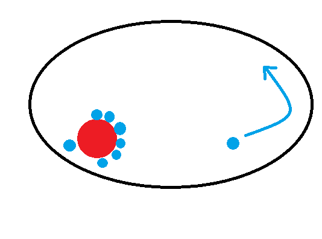
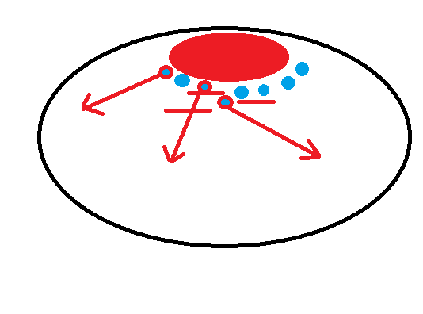

boss拉到左下，被boss点名的同学跑起来
boss点名撞人，被点名的两段跳+攻击，所有人等boss回左下角
boss转圈吸人，当boss头转到自己方向时，两段跳+攻击
有破招任务的去破招，其余人在中间等boss出现
被点名的往外跑，远离人群，所有人尽量躲开地上裂缝，减少奶妈的压力
起跳躲移动的山。有霸体的可以用霸体来抵挡。最好站到最中间
被点名的人跑到屏幕最外侧，从最左边跑到最右边
有破招任务的破招，其余人继续输出

开始时的站位
所有人走到boss所在的线上，boss过来时两段跳+普攻，然后追着boss打
集中站位。boss会点名并跳到被点名人的位置，所有人在boss选定位置后躲开技能并回头输出
boss会点名，旋转移动到被点名人的脚下，对路径上的人造成伤害。一共四次。第四次所有人到最上方，两段跳+普攻躲开
有破招任务的破招。其余人在中间等boss。注意躲技能。破招的人需要注意，当一个破招完成了，其余的破招怪的位置会随机改变。